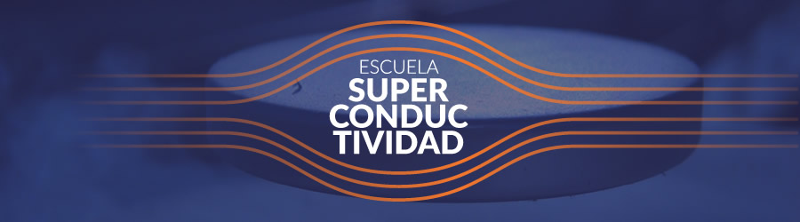

Introduccion
La superconductividad es un fenómeno cuántico que se manifiesta macroscópicamente como la pérdida de la resistencia eléctrica por debajo de una temperatura crítica, en ciertos materiales que llamamos superconductores.
Otra manifestación es la expulsión del interior del superconductor de un campo magnético externo; fenómeno conocido como efecto Meissner.
La superconductividad es uno de los fenómenos físicos que mayor atención ha recibido por la comunidad de físicos desde que se descubrió en 1911. Sin embargo, fue hasta 1957 que se logró explicar el mecanismo microscópico de la superconductividad que hoy conocemos como convencional.
En 1986 la superconductividad mostró una nueva faceta con el descubrimiento de superconductores con temperaturas críticas más altas que la temperatura de licuación del nitrógeno (77 K), por lo que a los nuevos superconductores los conocemos como superconductores de alta temperatura crítica Tc.
A pesar de que han pasado más de 35 años del descubrimiento de los superconductores de alta temperatura crítica, todavía no se tiene una teoría que explique el mecanismo microscópico que origina la superconductividad de alta Tc.
Actualmente se continúa con la búsqueda y el descubrimiento de superconductores con temperaturas críticas cada vez más altas en todo tipo de materiales y en condiciones extremas de presión.
Así, en septiembre del 2015 se reportó el descubrimiento del superconductor hidruro de azufre H3S bajo una presión de aproximadamente un millón de atmósferas con temperatura crótica de 203K.
Ahora en el 2021 el superconductor con la temperatura más alta descubierto en octubre del 2020 (E. Snider, et al., Nature 586, 373 (2020)) es el hidruro de azufre carbonatado (CSH) con una Tc = 287.7K (14.5°C) pero a una presión de 267GPa, es decir, 2.6 millones de atmósferas.
El 8 de abril de 2016 se cumplieron 105 años del descubrimiento de la que hoy conocemos como la superconductividad convencional y para celebrarlo, colegas y alumnos de varias instituciones del área metropolitana, realizamos una reunión académica en el Instituto de Física de la UNAM. Al final realizamos una mesa de discusión sobre "El futuro de la superconductividad en México".
Se plantearon varias propuestas y una de ellas fue la realización de una Escuela de Superconductividad que se llevara a cabo periódicamente.
La 1a Escuela de Superconductividad se realizó en el Instituto de Física de la UNAM del 24 al 27 de octubre de 2016.
Participaron 40 alumnos: 11 de provincia y 29 del Área Metropolitana.
Se ofrecieron cursos de dos horas y pláticas de una hora. La 2a Escuela de Superconductividad se realizó en el Instituto de Física de la Universidad Autónoma de Puebla, durante la semana del 15 al 18 de noviembre de 2017, con una asistencia de 60 alumnos provenientes de toda la república mexicana.
La 3a Escuela se realizó en las instalaciones del Instituto de Ingeniería de la UNAM, del 17 al 22 de junio de 2019 con la asistencia de 66 alumnos tanto del área metropolitana como de la provincia. Por el confinamiento al que nos obligó la Pandemia del COVID19, la 4a Escuela de Superconductividad se realizó en línea desde la Ciudad de México la cual se transmitió vía Google Meet y por el canal de Youtube del Instituto de Física de la UNAM, las mañanas de los cuatro sábados de noviembre del 2020.
Las Escuelas de Superconductividad tienen el objetivo de llevar el tema de la superconductividad a las nuevas generaciones de estudiantes de los últimos semestres de las carreras de Física, Ingeniería y carreras afines, así como a los estudiantes de posgrado.
Se imparten cursos cortos y pedagógicos, además de conferencias de divulgación, directamente de los investigadores expertos en el tema. Se enseña las novedades teóricas y experimentales complementadas con pláticas sobre las aplicaciones actuales y futuras de la superconductividad.